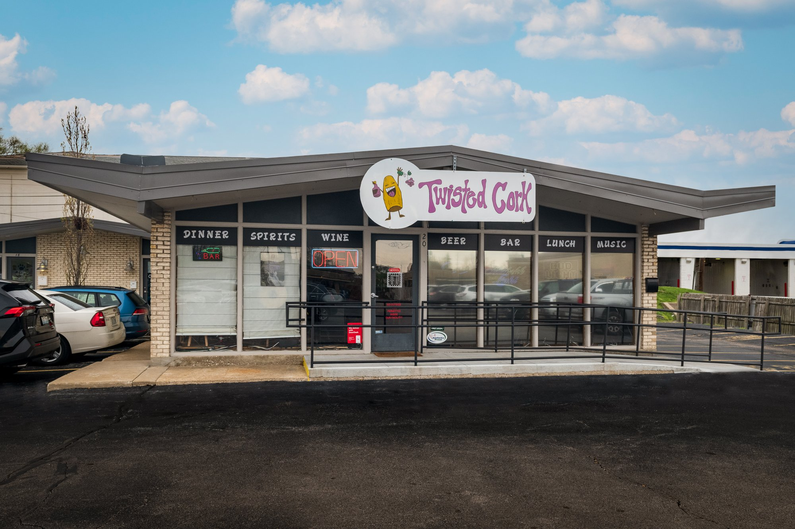

ABOUT THE TWISTED CORK
The Twisted Cork originally opened in 2006. Prentice and "Momma" Sue Slone took over the business in 2013. Together they worked to turn The Twist Cork into the gem that we know today.
In addition to our bar menu, we serve fresh made-to-order sandwiches, as well as a selection of sides and salads and other good stuff along with weekly specials.
Not only do they serve good food and drinks, but there is some form of entertainment every day. If you like music, then this is the place to be!
Owners:
- Prentice Slone
- "Momma" Sue Slone
Company Officer:
- Whitney Adams
Chef:
- Riley Acke

WHERE TO FIND US
FYI! We offer fresh food at affordable prices. We understand your needs and we will cater the food to satisfy the biggerst criteria of them all, both look and taste.
Reserve a table, ask for today's special or just send us a message: